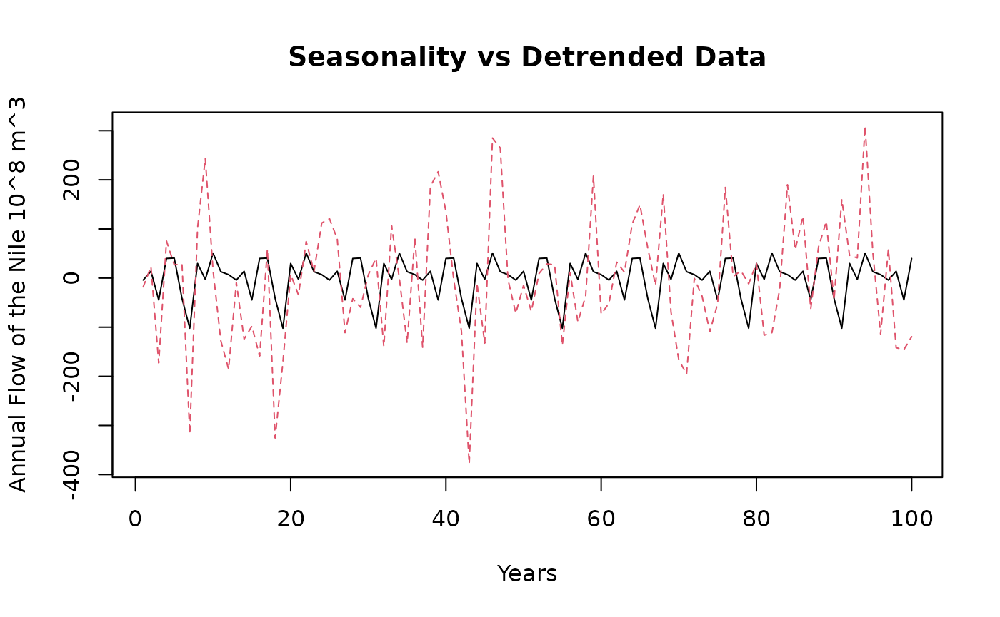

Example-Walkthrough
Example-Walkthrough.RmdIntroduction
In this example, we will go through the various features of StructuralDecompose. We will trace it’s behavior with the popular ‘Nile Dataset’ that tracks the annual flow of the Nile river. This dataset has a single break-point in the series. We will test our algorithm against other common trend fitting algorithms as well.
Getting Started
StructuralDecompose primarily relies on ‘Strucchange’ and ‘changepoints’ for the detection of breakpoints. Other packages will be added soon. Currently the smoothening algorithm defaults to loess, but we will add further smoothening algorithms in the future.
suppressMessages(suppressWarnings(library(changepoint)))
suppressMessages(suppressWarnings(library(strucchange)))Loading the Data
To read the data we can use the simple:
data <- StructuralDecompose::Nile_dataset[,1]Let’s see the movement of the data over time
matplot(data, type = 'l', xlab = 'Years', ylab = 'Annual Flow of the Nile (10^8 m^3')
There is a sudden level shift within the data, let’s see decompose with simple stl and see how well the data movement is captured.
data <- StructuralDecompose::Nile_dataset[,1]
data = ts(data = as.vector(t(data)), frequency = 12)
decomposed <- stl(data, s.window = 'periodic')
seasonal <- decomposed$time.series[,1]
trend <- decomposed$time.series[,2]
remainder <- decomposed$time.series[,3]Decomposition
Let’s decompose the time series into parts and observe it’s behavior

As we can see the trend overexplains the time series and we do not see the average movement of the series
matplot(cbind(trend, data), type = 'l', xlab = 'Years', ylab = 'Annual Flow of the Nile (10^8 m^3', main = 'Trend vs Base Data')
Let’s now check simple smoothening with lowess
Trend <- lowess(data)$y
matplot(cbind(Trend, data), type = 'l', xlab = 'Years', ylab = 'Annual Flow of the Nile (10^8 m^3', main = 'Smoothened Trend vs Base Data')
As we can see, it does not do a great job of identifying that significant level shift, it smoothens the entire series at once.
Let’s see it’s behavior with StructuralDecompose
Results <- StructuralDecompose::StructuralDecompose(Data = data)
matplot(cbind(Results$trend_line, data), type = 'l', xlab = 'Years', ylab = 'Annual Flow of the Nile (10^8 m^3', main = 'New Trend vs Base Data')
As we can see, the algorithm treats the series as two separate time series, and smoothens each one. This delivers a superior decomposition.
Let’s see the other components of seasonality and the remainder.
matplot(cbind(as.numeric(Results$seasonality), c(data - Results$trend_line)), type = 'l', xlab = 'Years', ylab = 'Annual Flow of the Nile 10^8 m^3',main = 'Seasonality vs Detrended Data')
As we can see the behavior of seasonality is much better now, let’s compare it with the older series
matplot(cbind(as.numeric(seasonal), c(data - trend)), type = 'l', xlab = 'Years', ylab = 'Annual Flow of the Nile 10^8 m^3',main = 'Seasonality vs Detrended Data')